Skills 基本構造
Skills の核心的な本質は、AI に標準化された実行プロセスを定める操作ガイドラインであり、いったんルールを記述すれば、プログラムの関数のように繰り返し呼び出し、直接再利用できます。
Skills は Markdown テキスト形式で保存され、それ自体が直接機能を実行するわけではありません。
Skills はオンデマンド読み込み・段階的呼び出しの特性により、業務経験を効率的に蓄積し、能力の迅速な再利用と的確な伝達を実現します。
Skill の核心構造
Skills の核心とは:1つのフォルダ + 1つの SKILL.md ファイル。
SKILL.md ファイルには以下が含まれます:
- メタデータ（少なくとも名前と説明が必要）
- 特定のタスクを完了する方法を AI に指示する命令

1つの Skill は本質的に1つの Markdown ファイルです（ファイル名は SKILL.md に固定）
my-skill/ └── SKILL.md （唯一必需）
SKILL.md 基本テンプレート:
--- name: your-skill-name description: 一句话描述该 Skill 的功能和使用场景 --- # Skill 名称 ## 使用指引 [给 AI 的分步骤行为指引] ## 示例 [该 Skill 的具体使用示例]
SKILL.md 全体は上下2つの部分に分かれます:------ で囲まれた YAML frontmatter（ヘッダー設定）、およびその下の Markdown 本文（実行手順）です。
| フィールド | 必須 | 説明 | 例 |
|---|---|---|---|
name | 是 | Skill の一意の識別子で、kebab-case で命名します。/ コマンドから参照され、システムが Skill を識別するための重要なフィールドです。 | web-design-guidelines |
description | 是 | 機能とトリガーシナリオを一文で説明します。内容が具体的であるほど、トリガーが正確になります。 | UI/UX design review for web pages |
次に、各部分を一つずつ詳しく見ていきます:

Frontmatter: 必須フィールド2つ
Frontmatter は SKILL.md の上部にある --- で囲まれた YAML 設定ブロックで、Skill 全体の識別情報です。
公式では必須フィールドは2つだけと定められています:
フィールド1: name（スキル名）
name フィールドは最大64文字で、小文字のアルファベット、数字、ハイフンのみを含めることができます。
name: processing-pdfs # 好：动名词形式，清晰描述功能 name: analyzing-spreadsheets # 好：一眼知道用途 name: my-brand-guidelines # 好：组织专属知识 name: helper # 差：太模糊 name: MySkill # 差：包含大写字母（不合规） name: data files # 差：包含空格（不合规）
動名詞形式（動詞 + -ing）での命名を推奨します。例: processing-pdfs、analyzing-spreadsheets。これにより、Skill が提供する活動や能力を明確に説明できます。
| 推奨 | 非推奨 | 理由 |
|---|---|---|
code-reviewer | CodeReviewer | 小文字とハイフンを統一して使用し、クロスプラットフォームの互換性問題を回避します |
sql-optimizer | sql_optimizer | kebab-case は慣習的な形式であり、ディレクトリ名と一致させます |
deploy-check | deploy-check-tool-v2 | 名前は簡潔にし、バージョン情報はファイル内部の説明に記載します |
フィールド2: description（トリガー条件の説明）
これは最も重要なフィールドです。起動時、システムはすべての Skills の name と description だけをシステムプロンプトにプリロードします。
AI が description を現在のタスクに関連すると判断した場合にのみ、完全な SKILL.md の内容がさらに読み込まれます。
description には次の2つの部分を両方含める必要があります:この Skill が何をするか、そしていつ Claude がそれを使用すべきか。
description: | Use when the user needs to create, read, edit, or generate Word documents (.docx). Triggers include: 'Word doc', 'word document', '.docx', 'report', 'letter', 'memo', or any request to produce a formatted document for sharing or printing.

Markdown 本文: 実行手順の内部構造
| 推奨 | 非推奨 | 理由 |
|---|---|---|
| 「Python コードの SQL インジェクションリスクをスキャンし、修正提案を提供する」 | 「セキュリティツール」 | 説明が曖昧すぎて、正確にトリガーできません |
| 「Markdown をブランドガイドラインに適合する HTML メールに変換する」 | 「ファイル形式の変換」 | 具体的なシナリオが不足しており、他のタスクで誤ってトリガーされる可能性があります |
Frontmatter の後は Markdown 本文で、AI に具体的な手順を指示します。
少なくとも2つのブロックを含みます:

SKILL.md の例
SKILL.md 基本テンプレート:
--- name: pdf-processing description: 从 PDF 中提取文本和表格，填写表单，并合并文档 --- # PDF 处理 ## 使用场景 当需要对 PDF 文件进行操作时使用，例如： - 提取 PDF 文本或表格数据 - 填写 PDF 表单 - 合并多个 PDF 文件 ## 提取文本 - 使用 `pdfplumber` 提取文本型 PDF 内容 - 扫描版 PDF 需配合 OCR 工具 ## 填写表单 - 读取 PDF 表单字段 - 按输入数据填充并生成新文件
最小必須項目の例:
--- name: skill-name description: 说明该 Skill 的功能以及适用场景 ---
オプションフィールドを含む例:
--- name: pdf-processing description: 从 PDF 中提取文本和表格，填写表单，并合并文档 license: Apache-2.0 metadata: author: example-org version: "1.0" ---
フィールド説明:
| フィールド | 必須 | 説明 |
|---|---|---|
| name | 是 | Skill 名。最大64文字で、小文字のアルファベット、数字、および-ハイフンのみ使用できます。また、ハイフンで-始まったり終わったりしてはいけません。 |
| description | 是 | 機能と使用シナリオの説明。最大1024文字で、空にすることはできません |
| license | 否 | ライセンス名、または Skill に同梱されるライセンスファイルを指すパス |
| compatibility | 否 | 環境と依存関係の説明（製品、システムパッケージ、ネットワーク権限など）。最大500文字 |
| metadata | 否 | カスタムキーバリューペア。メタデータの拡張に使用します（例: 作者、バージョン番号） |
| allowed-tools | 否 | 使用を許可するツールのリスト（スペース区切り、実験的機能） |
Skill のファイルディレクトリ構成
1つのスキルは1つのフォルダであり、少なくとも1つの SKILL.md ファイルを含みます。必要に応じて、他のディレクトリやファイルも含めることができます。
コンテキストの膨張を避けるため:
- コアルール →
SKILL.md - 詳細情報 → 個別ファイル
- 実用ロジック → スクリプトで実行（読み込まない）
推奨される構成:
my-skill/
├── SKILL.md # 必需：元数据 + 指令
├── scripts/ # 可选：可执行代码
└── helper.py
├── references/ # 可选：参考文档
├── assets/ # 可选：模板、资源
└── ... # 其他文件或目录
各ディレクトリの役割は次のとおりです:
- SKILL.md: 必須ファイル。スキルのメタデータと実行命令を含みます
- scripts/: オプションのディレクトリ。エージェントが実行できる実行可能コードを含みます
- references/: オプションのディレクトリ。詳細な参考資料を含みます
- assets/: オプションのディレクトリ。テンプレート、画像などの静的リソースを含みます
 その他の拡張
その他の拡張
クリックしてノートを共有
<p style="font-size:14px;">ノートはこの記事の内容を拡張したものである必要があります!</p><br> <p style="font-size:12px;"><a href="../tougao.html" target="_blank">記事の投稿は、こちらをクリック</a></p> <p style="font-size:14px;"><a href="../w3cnote/runoob-user-test-intro.html" target="_blank">登録招待コードの取得方法</a></p> <h3 class="text-muted"><i class="fa fa-info-circle" aria-hidden="true"></i> ノートを共有する前に<a href=";.html" class="runoob-pop">ログイン</a>が必要です!</h3> <p><a href="../w3cnote/runoob-user-test-intro.html" target="_blank">登録招待コードの取得方法</a></p>